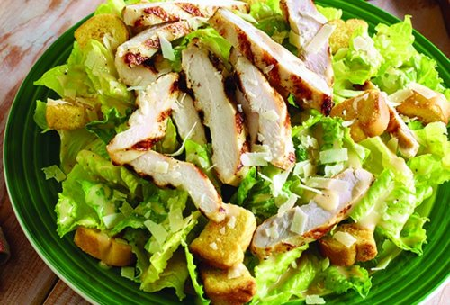

Recetas Rápidas
Wrap de Pollo y Aguacate

Instrucciones
- Coloca una tortilla de trigo en una sartén caliente.
- Agrega tiras de pollo cocido, aguacate y verduras frescas.
- Enrolla y corta en mitades.
- Sírvelo con salsa de yogur o mayonesa.
Ensalada de Atún y Garbanzos
Instrucciones
- Mezcla en un bol atún, garbanzos cocidos, cebolla roja y pimientos.
- Adereza con aceite de oliva, limón, sal y pimienta.
- Servir frío o a temperatura ambiente.
Batido Energético de Mango
Instrucciones
- Licúa 1 mango, 1 plátano, 200 ml de leche y 1 cucharadita de miel.
- Sirve en un vaso alto y disfruta de un batido refrescante.
Ensalada de Pollo con Arroz
Instrucciones
- Cocina el arroz y deja enfriar.
- Añade trozos de pollo cocido, maíz, cebollas y pimientos.
- Adereza con una vinagreta de mostaza y miel.
- Mezcla bien y sirve fría.
Quesadillas Rápidas
Instrucciones
- Coloca queso rallado sobre una tortilla de maíz.
- Agrega un poco de pollo o carne.
- Dobla la tortilla y cocina hasta que esté dorada por ambos lados.
- Sírvelo con salsa de guacamole.
Huevos Revueltos con Espinacas
Instrucciones
- Fría las espinacas en una sartén con un poco de aceite de oliva.
- Agrega los huevos batidos y cocina hasta que estén revueltos.
- Sírvelo caliente con pan tostado.
Tostadas de Aguacate con Huevo

Instrucciones
- Tuesta pan de tu elección.
- Coloca aguacate machacado sobre las tostadas.
- Fría un huevo y ponlo encima.
- Salpica con sal y pimienta.
Sándwich de Pollo y Pesto

Instrucciones
- Unta pesto en dos rebanadas de pan.
- Coloca pechuga de pollo cocida y lechuga.
- Cierra el sándwich y disfruta.
Tortilla de Verduras
Instrucciones
- Saltea espinacas, pimientos y cebolla.
- Bate dos huevos y vierte sobre las verduras.
- Cocina hasta que esté firme y da vuelta.
Ensalada de Pollo César

Instrucciones
- Cocina pechugas de pollo y córtalas en tiras.
- Mezcla con lechuga, aderezo César y queso parmesano.
- Sirve con croutons.
Pasta con Salsa de Tomate y Albahaca
Instrucciones
- Cocina la pasta.
- Prepara una salsa con tomate triturado y albahaca fresca.
- Mezcla con la pasta cocida.
Sopa de Tomate Rápida

Instrucciones
- Cocina tomates con cebolla y ajo.
- Tritura la mezcla y cocina por unos minutos más.
- Añade crema al gusto y sirve caliente.
Tacos de Pescado

Instrucciones
- Cocina filetes de pescado con especias.
- Colócalo en tortillas de maíz.
- Añade col rallada y salsa de yogur.
Aguacate Relleno con Atún
Instrucciones
- Corta un aguacate por la mitad y quita el hueso.
- Mezcla atún con mayonesa y rellena las mitades de aguacate.
Chili con Carne

Instrucciones
- Cocina carne molida con cebolla y especias.
- Añade frijoles, tomate y cocina por 15 minutos.
- Sirve con crema agria y cilantro fresco.
Ensalada de Quinoa con Vegetales

Instrucciones
- Cocina quinoa y enfría.
- Mezcla con pepino, tomate, cebolla y perejil.
- Añade aceite de oliva y limón.
Postres
Mousse de Chocolate

Instrucciones
- Derrite 200g de chocolate y mezcla con 300ml de nata montada.
- Deja enfriar en la nevera durante 3 horas.
Tarta de Limón
Instrucciones
- Prepara una base de galletas trituradas y mantequilla.
- Haz una mezcla con jugo de limón, azúcar y huevo, y vierte sobre la base.
- Hornea a 180°C durante 15 minutos.
Cinnamon Rolls

Instrucciones
- Haz una masa de pan y extiende un poco de mantequilla y azúcar moreno.
- Enróllala y corta en trozos.
- Hornea a 180°C hasta que estén doradas y cubre con glaseado.
Cheesecake Sin Hornear
Instrucciones
- Tritura galletas y mezcla con mantequilla derretida.
- Mezcla queso crema con azúcar y vainilla.
- Vierte sobre la base de galleta y deja enfriar por 4 horas.
Pudín de Chía
Instrucciones
- Mezcla 3 cucharadas de semillas de chía con 250 ml de leche y azúcar al gusto.
- Refrigera durante 4 horas hasta que espese.
Galletas de Chocolate

Instrucciones
- Mezcla mantequilla, azúcar, harina, cacao y huevo.
- Forma bolitas y hornea a 180°C durante 10 minutos.
Muffins de Zanahoria

Instrucciones
- Mezcla harina, azúcar, zanahoria rallada y huevo.
- Hornea a 180°C durante 20-25 minutos.
Tiramisu Casero

Instrucciones
- Haz una mezcla de café fuerte, azúcar y licor de café.
- Remoja bizcochos de soletilla en la mezcla.
- Alterna capas de bizcochos y mezcla de mascarpone. Refrigera por 4 horas.
Pavlova

Instrucciones
- Bate claras de huevo con azúcar hasta formar picos duros.
- Hornea a 120°C durante 1 hora y media.
- Deja enfriar y cubre con crema batida y frutas frescas.
Bocaditos de Coco
Instrucciones
- Mezcla coco rallado, leche condensada y vainilla.
- Forma bolitas y hornea a 180°C por 10 minutos.